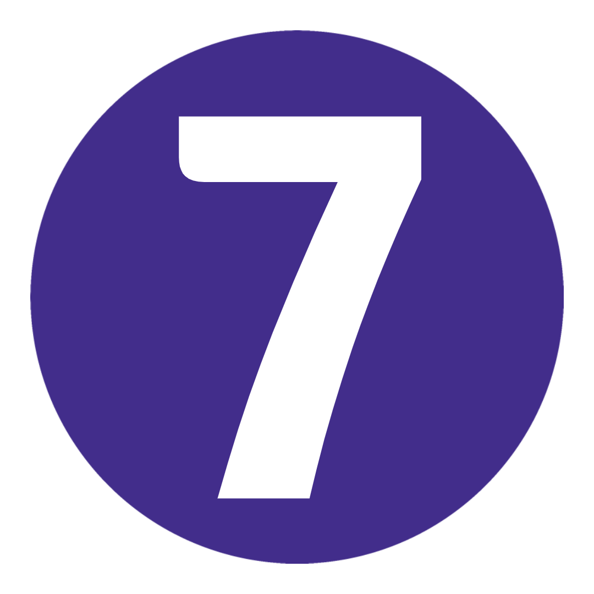
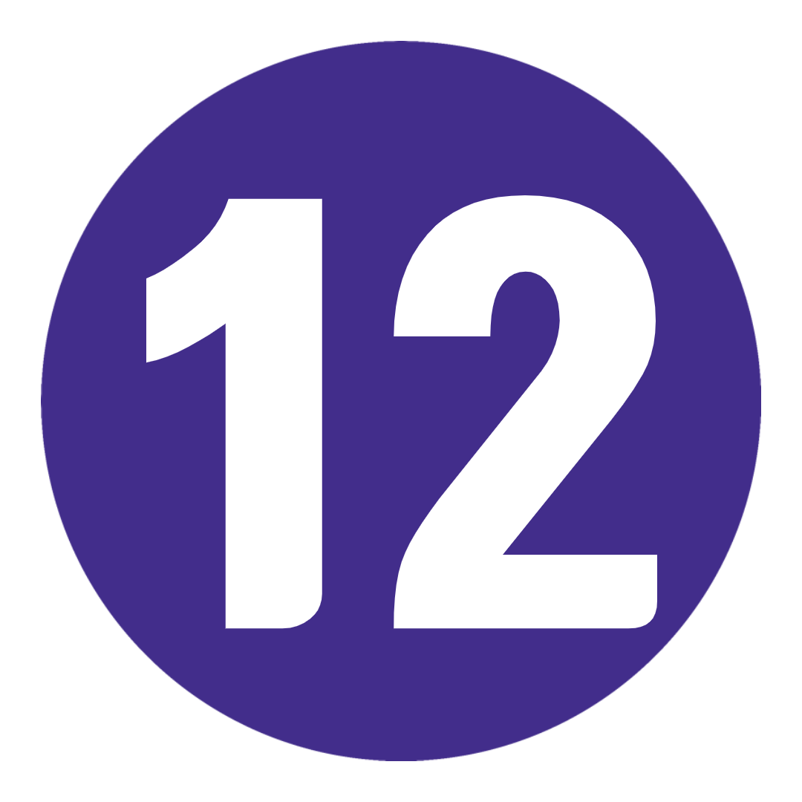
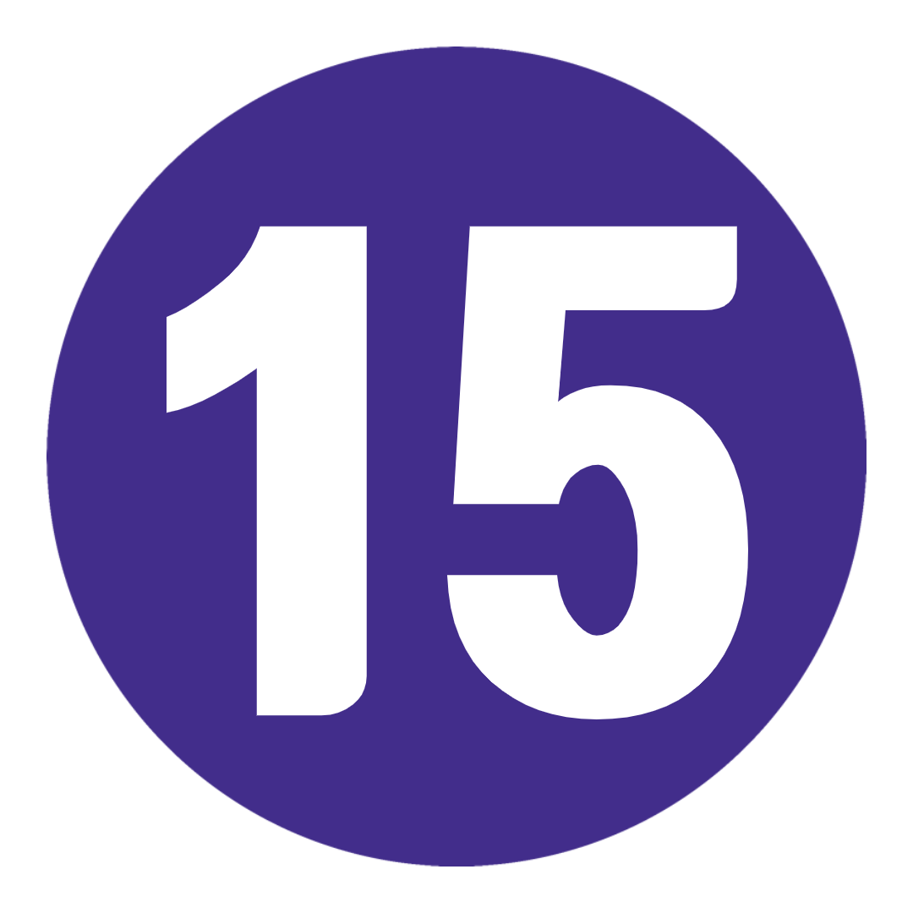

16 일
5 국가
1 인당
US $ 3,081.00 부터

여행 코드: EXWULL-1
여행 노트 다운로드-
날짜 및 가격 확인
2021년 10월 10월 24일 일 ~ 11월 8일 월 윈터 브리튼&아일랜드 2021-22 US$3,295.00 2021년 11월 11월 28일 일 ~ 12월 13일 월 윈터 브리튼&아일랜드 2021-22 US$3,295.00 2021년 12월 12월 28일 일 ~ 1월 12일 월 윈터 브리튼&아일랜드 2021-22 US$3,620.00 2021년 10월 1월 16일 일 ~ 1월 31일 월 윈터 브리튼&아일랜드 2021-22 US$3,081.00
여행개요 |
|
 밤 밤 |
 식사 식사 |
 답사 답사 |
 최대 인원 최대 인원 |
 여행 가이드 여행 가이드 |
|
| 시 작 | 07 : 30 런던 |
| 종 료 | 21 : 00 런던 |
여행 개요
지도
나를 위한 여행인가? 다양하다. 흥미 진진한. 매력적인.
1. 영국. 2. 아일랜드 공화국. 3. 북아일랜드. 4. 스코틀랜드. 5. 웨일즈.
다섯 개의 믿을 수 없는 국가가 모두 행성의 작은 구석에 모여 있습니다.
그리고 무엇을 추측? 각 지역은 고유한 문화, 언어, 억양, 음식 및 사실로 가득 차 있습니다.
의미? 이 모든 것을 이해하려면 전문가의 도움을 받아야 합니다. 운이 좋게도 몇 가지 준비되어 있습니다.
이 OG 영국 및 아일랜드 여행을 겨울의 영광으로 경험할 준비가 되셨습니까? 우리는 그렇게 생각했습니다.
여행 일정
-
 영국 런던에서 옥스퍼드 경유 리버풀까지
어느 순간 당신은 일상의 일상에 갇히게 되고, 다음 순간 당신은 런던 타운에 있게 됩니다. 그리고 100% 다르지만 100% 같은 사람들을 만납니다. 특별함을 발견할 준비가 되셨습니까? 우리는 그렇게 생각했습니다. 일찍 길을 나서 첫 번째 목적지인 옥스포드로 향합니다. 믿을 수 없는 대학 주변을 도보로 둘러보며 해리 포터의 실제 모습을 확인하세요. Carfax Tower에서 전망을 만끽하세요. 그리고 토스트한 벽난로 옆에서 펍 점심을 먹습니다. 그런 다음: 리버풀로 향하는 트랙을 만들 것입니다. 우리의 여행 리더는 도시 주변을 보여줄 것입니다 - 우리가 Tate Liverpool, Maritime Museum, Albert Docks 및 The Beatles 박물관 (물론)과 같은 것을 확인하기 위해 단독으로 출발하기 전에. 갱단과 함께 하는 오늘 밤 포함된 저녁 식사 시간에 늦지 않도록 하세요!
영국 런던에서 옥스퍼드 경유 리버풀까지
어느 순간 당신은 일상의 일상에 갇히게 되고, 다음 순간 당신은 런던 타운에 있게 됩니다. 그리고 100% 다르지만 100% 같은 사람들을 만납니다. 특별함을 발견할 준비가 되셨습니까? 우리는 그렇게 생각했습니다. 일찍 길을 나서 첫 번째 목적지인 옥스포드로 향합니다. 믿을 수 없는 대학 주변을 도보로 둘러보며 해리 포터의 실제 모습을 확인하세요. Carfax Tower에서 전망을 만끽하세요. 그리고 토스트한 벽난로 옆에서 펍 점심을 먹습니다. 그런 다음: 리버풀로 향하는 트랙을 만들 것입니다. 우리의 여행 리더는 도시 주변을 보여줄 것입니다 - 우리가 Tate Liverpool, Maritime Museum, Albert Docks 및 The Beatles 박물관 (물론)과 같은 것을 확인하기 위해 단독으로 출발하기 전에. 갱단과 함께 하는 오늘 밤 포함된 저녁 식사 시간에 늦지 않도록 하세요!
키워드 공식 만찬 + 옥스포드 오리엔테이션 투어 + 리버풀의 도보 여행 -
 리버풀-요크
리버풀에 작별 인사를 하고 중세 성벽 도시 요크로 출발합니다. 수세기의 역사. '거룩한 sh*t' 가치가 있는 대성당. 그리고 꽤 멋진 술집. 비니를 착용하세요. 워킹 투어를 통해 요크가 누군지 알게 되고 나머지는 여러분에게 달려 있습니다. York Minster 타워로 올라가 JORVIK Viking Center를 방문하거나 탐험가 모드에 참여하고 Shambles와 Snickelways를 따라 길을 잃습니다. 나중에 York Roast Co.를 찾아 저녁 식사로 Yorkshire Roast 랩을 맛보십시오. 너무 틀리다, 맞다.
리버풀-요크
리버풀에 작별 인사를 하고 중세 성벽 도시 요크로 출발합니다. 수세기의 역사. '거룩한 sh*t' 가치가 있는 대성당. 그리고 꽤 멋진 술집. 비니를 착용하세요. 워킹 투어를 통해 요크가 누군지 알게 되고 나머지는 여러분에게 달려 있습니다. York Minster 타워로 올라가 JORVIK Viking Center를 방문하거나 탐험가 모드에 참여하고 Shambles와 Snickelways를 따라 길을 잃습니다. 나중에 York Roast Co.를 찾아 저녁 식사로 Yorkshire Roast 랩을 맛보십시오. 너무 틀리다, 맞다.
키워드 아침밥 + 요크 도보 여행 -
 요크에서 스코틀랜드 에든버러까지
거짓말은 없습니다. 오늘은 운전을 하는 날입니다. 하지만 당신에게는 멋진 AF 여행 동료가 있어 음악을 펌핑하고 즐거운 시간을 보낼 수 있습니다. 먼저 북쪽의 천사 아래에서 날개를 펼치십시오. 그런 다음: 우리는 국경을 넘어 보니 스코틀랜드로 갈 것입니다. 에든버러에서의 저녁 식사는 우리의 몫입니다. 선택적인 야간 유흥 투어를 위해 갱단을 모으기 전에 풍성한 펍 잔치로 배를 채우십시오. 도시의 바 장면이 과대 광고에 부합하는지 확인할 시간입니다.
요크에서 스코틀랜드 에든버러까지
거짓말은 없습니다. 오늘은 운전을 하는 날입니다. 하지만 당신에게는 멋진 AF 여행 동료가 있어 음악을 펌핑하고 즐거운 시간을 보낼 수 있습니다. 먼저 북쪽의 천사 아래에서 날개를 펼치십시오. 그런 다음: 우리는 국경을 넘어 보니 스코틀랜드로 갈 것입니다. 에든버러에서의 저녁 식사는 우리의 몫입니다. 선택적인 야간 유흥 투어를 위해 갱단을 모으기 전에 풍성한 펍 잔치로 배를 채우십시오. 도시의 바 장면이 과대 광고에 부합하는지 확인할 시간입니다.
키워드 아침밥 + 공식 만찬 + 북쪽의 천사 보기
추가 옵션 에든버러의 밤문화 투어: £12부터 -
 에든버러
오늘 이 역사적인 수도의 도보 여행으로 시작하십시오. 에딘버러 성 옆을 둘러보고, 로열 마일을 산책하고, 그레이프라이어스 바비의 동상에서 모든 느낌을 느끼고, 세인트 자일스 대성당에 감탄하십시오. 그때? 나머지는 100% 당신에게 달려 있습니다! 스코틀랜드 박물관에서 바이킹 시대의 독특한 컬렉션을 확인하세요. 부츠를 신고 아서스 시트(Arthur's Seat)를 하이킹하세요. Royal Yacht Britannia에 탑승하십시오. 멋진 Leith 지구를 탐험하세요. 또는 Elephant House(JK Rowling이 THAT 시리즈를 쓴 곳)에서 애프터눈 티를 마시며 날씨를 피하세요. 그리고 오늘 밤? 'City of the Dead' 투어에서 에든버러의 어두운 면을 탐구할 기회가 있습니다. 이를 위해 여분의 속옷을 준비해야 할 수도 있습니다.
에든버러
오늘 이 역사적인 수도의 도보 여행으로 시작하십시오. 에딘버러 성 옆을 둘러보고, 로열 마일을 산책하고, 그레이프라이어스 바비의 동상에서 모든 느낌을 느끼고, 세인트 자일스 대성당에 감탄하십시오. 그때? 나머지는 100% 당신에게 달려 있습니다! 스코틀랜드 박물관에서 바이킹 시대의 독특한 컬렉션을 확인하세요. 부츠를 신고 아서스 시트(Arthur's Seat)를 하이킹하세요. Royal Yacht Britannia에 탑승하십시오. 멋진 Leith 지구를 탐험하세요. 또는 Elephant House(JK Rowling이 THAT 시리즈를 쓴 곳)에서 애프터눈 티를 마시며 날씨를 피하세요. 그리고 오늘 밤? 'City of the Dead' 투어에서 에든버러의 어두운 면을 탐구할 기회가 있습니다. 이를 위해 여분의 속옷을 준비해야 할 수도 있습니다.
키워드 아침밥 + 에든버러의 도보 여행
추가 옵션 'City of the Dead' 지하 투어: £11부터 -
 에든버러
모든 것을 얻지 못했습니까? DW 우리가 당신을 지원합니다 – 여기에 우리가 더 일찍 준비한 무료 날이 있습니다. 패딩 재킷의 지퍼를 잠그고 포터 테마의 도보 여행에 뛰어드세요. Holyroodhouse 궁전에서 Liz의 공식 스코틀랜드 거주지를 확인하십시오. 국립 및 초상화 갤러리를 둘러보세요. Scotch Whisky Experience에서 스코틀랜드의 국민 음료를 즐겨보세요. 또는 George Street를 따라 플라스틱을 플래시하십시오. 날씨가 좋다면 칼튼 힐(Carlton Hill)로 올라가 도시의 일몰을 모두 감상하세요. 그런 다음 기발한 칵테일 바, 아늑한 전통 펍, 수제 맥주집으로 가득한 올드 타운에서 밤을 보낼 수 있습니다. 우리의 즐겨 찾기? 구세주를 노려라. 생각하십시오: 1950년대 칵테일 바 + 아케이드 게임 = 엔터테인먼트의 시간!
에든버러
모든 것을 얻지 못했습니까? DW 우리가 당신을 지원합니다 – 여기에 우리가 더 일찍 준비한 무료 날이 있습니다. 패딩 재킷의 지퍼를 잠그고 포터 테마의 도보 여행에 뛰어드세요. Holyroodhouse 궁전에서 Liz의 공식 스코틀랜드 거주지를 확인하십시오. 국립 및 초상화 갤러리를 둘러보세요. Scotch Whisky Experience에서 스코틀랜드의 국민 음료를 즐겨보세요. 또는 George Street를 따라 플라스틱을 플래시하십시오. 날씨가 좋다면 칼튼 힐(Carlton Hill)로 올라가 도시의 일몰을 모두 감상하세요. 그런 다음 기발한 칵테일 바, 아늑한 전통 펍, 수제 맥주집으로 가득한 올드 타운에서 밤을 보낼 수 있습니다. 우리의 즐겨 찾기? 구세주를 노려라. 생각하십시오: 1950년대 칵테일 바 + 아케이드 게임 = 엔터테인먼트의 시간!
키워드 아침밥 -
 에든버러에서 스코틀랜드 고원까지
숨막히는 풍경. 신비한 전설. 문화가 풍부한 전통. 그리고 많은 매력적인 빨간 머리. 스코틀랜드 고원에 있어야 합니다. 당신이 sporran을 흔드는 것보다 더 많은 협곡, 산 및 호수를 지나갈 때 눈 순찰을 돌립니다. 오늘 밤, 자유롭게 탐험하거나 휴식을 취하고 모든 것을 받아들일 수 있습니다 . 네, 실제로 여기 있습니다. *참고: 스코틀랜드 고원은 넓으며 현재 정확한 위치를 보장할 수 없습니다. 따라서 착석하여 이륙에 가까운 특정 위치에 대해 Trip Notes 또는 Topdeck 앱을 확인하십시오.
에든버러에서 스코틀랜드 고원까지
숨막히는 풍경. 신비한 전설. 문화가 풍부한 전통. 그리고 많은 매력적인 빨간 머리. 스코틀랜드 고원에 있어야 합니다. 당신이 sporran을 흔드는 것보다 더 많은 협곡, 산 및 호수를 지나갈 때 눈 순찰을 돌립니다. 오늘 밤, 자유롭게 탐험하거나 휴식을 취하고 모든 것을 받아들일 수 있습니다 . 네, 실제로 여기 있습니다. *참고: 스코틀랜드 고원은 넓으며 현재 정확한 위치를 보장할 수 없습니다. 따라서 착석하여 이륙에 가까운 특정 위치에 대해 Trip Notes 또는 Topdeck 앱을 확인하십시오.
키워드 아침밥
-
 스코틀랜드 고원
이것은 당신의 날, 당신의 방법입니다. 하지만 관심이 있다면 Nessie를 볼 수 있는 여행이 포함되어 있습니다. 모든 전설을 듣고 옵션으로 제공되는 경치 좋은 크루즈에서 안개 속으로 미끄러운 빨판을 발견할 수 있는지 확인하십시오. 오히려 당신 자신의 자발적인-이것이 내가 여기 온 이유가 무엇입니까? 걱정 마! 여기 주변에 탐험할 것이 많이 있습니다. 저희를 믿으세요. 오늘 밤, 여행 동료를 모아 유서 깊은 펍에서 소박하고 푸짐한 스코틀랜드 요리를 맛보세요. 해기스를 해볼까? 계속해, 감히.
키워드 아침밥 + 네스호 방문
추가 옵션 네스호 크루즈: £14부터 -
 스코틀랜드 고원에서 글래스고까지
사실: 위스키 없이 스코틀랜드를 '할' 수는 없습니다. 그래서 오늘은 Glengoyne Distillery 투어와 마음을 따뜻하게 해주는 시음회를 준비했습니다. 나중에 감사할 수 있습니다. 이 액체 금이 거치는 마법의 숙성 과정을 알아보세요. 글래스고를 향해! 우리의 여행 리더는 도보 여행을 통해 Merchants Quarter, Buchanan Street 및 George Square 주변을 안내할 것입니다. 그렇다면 나머지는 100% 당신에게 달려 있습니다. 그래도 Merchant City에서 식사를 하는 것이 좋습니다.
스코틀랜드 고원에서 글래스고까지
사실: 위스키 없이 스코틀랜드를 '할' 수는 없습니다. 그래서 오늘은 Glengoyne Distillery 투어와 마음을 따뜻하게 해주는 시음회를 준비했습니다. 나중에 감사할 수 있습니다. 이 액체 금이 거치는 마법의 숙성 과정을 알아보세요. 글래스고를 향해! 우리의 여행 리더는 도보 여행을 통해 Merchants Quarter, Buchanan Street 및 George Square 주변을 안내할 것입니다. 그렇다면 나머지는 100% 당신에게 달려 있습니다. 그래도 Merchant City에서 식사를 하는 것이 좋습니다.
키워드 아침밥 + 글래스고의 도보 여행 + 글렌고인 위스키 증류소 투어 -
 글래스고에서 북아일래드 벨파스트까지
일어나 빛나라! 우리는 스코틀랜드를 뒤로하고 에메랄드 섬으로 항해를 시작합니다. 먼저? 벨파스트. 네잎 클로버와 금 항아리 이상 - 북아일랜드의 수도는 이 섬나라의 풍부한 역사를 더 깊이 탐구할 수 있는 곳입니다. 중요한 개신교 및 가톨릭 영지와 벨파스트 평화의 벽을 방문하는 선택적 블랙 캡 투어에서 문제에 대한 현지 통찰력을 얻으십시오. 아니면 도시의 최첨단 타이타닉 박물관에 들러보세요. 오늘 밤, 우리는 갱단과 함께 저녁 식사를 포함하여 현지 음식을 먹을 것입니다. 그런 다음 대성당 지구로 가서 트렌디한 바 장면을 확인하세요. 또는 아이리쉬 커피를 홀짝이며 불 옆에서 발을 따뜻하게 할 수 있는 지역 명소를 찾아보세요. 그것은 당신의 내면을 안아주는 것과 같습니다.
글래스고에서 북아일래드 벨파스트까지
일어나 빛나라! 우리는 스코틀랜드를 뒤로하고 에메랄드 섬으로 항해를 시작합니다. 먼저? 벨파스트. 네잎 클로버와 금 항아리 이상 - 북아일랜드의 수도는 이 섬나라의 풍부한 역사를 더 깊이 탐구할 수 있는 곳입니다. 중요한 개신교 및 가톨릭 영지와 벨파스트 평화의 벽을 방문하는 선택적 블랙 캡 투어에서 문제에 대한 현지 통찰력을 얻으십시오. 아니면 도시의 최첨단 타이타닉 박물관에 들러보세요. 오늘 밤, 우리는 갱단과 함께 저녁 식사를 포함하여 현지 음식을 먹을 것입니다. 그런 다음 대성당 지구로 가서 트렌디한 바 장면을 확인하세요. 또는 아이리쉬 커피를 홀짝이며 불 옆에서 발을 따뜻하게 할 수 있는 지역 명소를 찾아보세요. 그것은 당신의 내면을 안아주는 것과 같습니다.
키워드 아침밥 + 공식 만찬
추가 옵션 벨파스트의 블랙 캡 투어: £13부터 -
 벨파스트에서 골웨이,아일랜드 공화국
몸을 가늘게 하여 거대한 홉스카치 게임을 즐겨보세요. 오늘은 건너뛰고 유명한 Giant's Causeway를 가로질러 건너뛸 것입니다. 이 거대한 육각형 기둥이 6천만 년 전 화산 활동에 의해 만들어졌다고 생각하십니까? 잘못된! 그들은 실제로 GIANT 크기의 테스토스테론으로 가득 찬 스탠드 오프의 잔재입니다. 실화입니다. 전문가 트립 리더에게 문의하세요. 다음: (런던)데리. Derry 벽화를 자세히 살펴보고 Trip Leader와 함께하는 오리엔테이션 투어에서 Bogside 전투와 Bloody Sunday에 대해 알아볼 것입니다. 나중에 밤에 탐험을 떠나기 전에 온로드 전문가와 함께 골웨이를 돌아보세요. 오늘 밤 저녁 식사는 당신에게 달려 있습니다. 그러나 우리는 여기에서 굴이 아주 좋다는 소리를 듣습니다. 유용한 정보: McDonagh's는 갈 곳입니다.
벨파스트에서 골웨이,아일랜드 공화국
몸을 가늘게 하여 거대한 홉스카치 게임을 즐겨보세요. 오늘은 건너뛰고 유명한 Giant's Causeway를 가로질러 건너뛸 것입니다. 이 거대한 육각형 기둥이 6천만 년 전 화산 활동에 의해 만들어졌다고 생각하십니까? 잘못된! 그들은 실제로 GIANT 크기의 테스토스테론으로 가득 찬 스탠드 오프의 잔재입니다. 실화입니다. 전문가 트립 리더에게 문의하세요. 다음: (런던)데리. Derry 벽화를 자세히 살펴보고 Trip Leader와 함께하는 오리엔테이션 투어에서 Bogside 전투와 Bloody Sunday에 대해 알아볼 것입니다. 나중에 밤에 탐험을 떠나기 전에 온로드 전문가와 함께 골웨이를 돌아보세요. 오늘 밤 저녁 식사는 당신에게 달려 있습니다. 그러나 우리는 여기에서 굴이 아주 좋다는 소리를 듣습니다. 유용한 정보: McDonagh's는 갈 곳입니다.
키워드 아침밥 + 자이언트 코즈웨이 방문 + 데리/런던데리 방문 + 골웨이 오리엔테이션 투어 -
 골웨이
모든 것을 수용할 수 있는 24시간이 있으므로 1초도 낭비하지 마십시오. 몇 가지 제안이 필요하십니까? 숨막히는 모허 절벽(Cliffs of Moher)으로의 여행을 신청하세요. 당신은 이것을 위해 당신의 카메라가 충전되기를 원할 것입니다. 또는 시내에 머물고 있다면 울프 톤 브리지(Wolfe Tone Bridge), 스패니시 아치(Spanish Arch), 린치 성(Lynch's Castle)을 확인하고 쿠판 태(Cupán Tae)에서 토끼풀 차를 마시십시오. 그때? O'Connor's Pub에서 골웨이 소녀/소년을 찾으세요.
골웨이
모든 것을 수용할 수 있는 24시간이 있으므로 1초도 낭비하지 마십시오. 몇 가지 제안이 필요하십니까? 숨막히는 모허 절벽(Cliffs of Moher)으로의 여행을 신청하세요. 당신은 이것을 위해 당신의 카메라가 충전되기를 원할 것입니다. 또는 시내에 머물고 있다면 울프 톤 브리지(Wolfe Tone Bridge), 스패니시 아치(Spanish Arch), 린치 성(Lynch's Castle)을 확인하고 쿠판 태(Cupán Tae)에서 토끼풀 차를 마시십시오. 그때? O'Connor's Pub에서 골웨이 소녀/소년을 찾으세요.
키워드 아침밥
추가 옵션 모허 절벽 당일 여행: €15부터 -
 골웨이-더블린
다음: 템플 바(Temple Bar)의 조약돌 거리와 수도의 유서 깊은 물웅덩이. 그러나 먼저 Burren을 가로 지르는 경치 좋은 길을 따라 마차 창에 코를 붙입니다. 회색의 험준한 지형과 독특한 식물 군집이 있는 이 곳은 이 세상의 것 같지 않습니다. 그때? 우리는 더블린으로 넘어갈 것입니다. 성도, 학자 및 U2의 고향 - 오늘 밤은 활기찬 현지 밤문화를 즐기거나 전통 무용 쇼에서 새로운 동작을 배울 수 있습니다.
키워드 아침밥
추가 옵션 전통 아일랜드 댄스 쇼: €40부터 -
 더블린
장갑을 끼고 Joe의 컵을 아래로 내리십시오. 우리는 도보 여행을 통해 이 역사적인 도시를 둘러볼 것입니다. 크라이스트처치 대성당, 더블린 성, 일반 우체국 및 템플 바를 확인하십시오. 그때? 기네스 스토어하우스(Guinness Storehouse)에서 아일랜드의 가장 상징적인 수출품의 특별한 점을 발견할 시간입니다. 7층으로 된 하늘 높이의 Gravity Bar와 시원한 파인트의 좋은 재료가 포함되어 있습니다. 사실: 당신은 오후에 당신이 원하는 무엇이든 할 수 있습니다. 계속해서 북적이는 아이리쉬 위스키 박물관(Irish Whisky Museum)으로 가십시오. 트리니티 칼리지에서 켈스의 서(Book of Kells)를 확인하십시오. Kilmainham Gaol을 둘러보세요. Drury Street에서 특별한 사람을 위해 claddagh 반지를 구입하십시오. 그리고 Murphey's에서 브라운 브레드 아이스크림 콘도 놓치지 마세요. 우리를 믿으십시오. 겨울에도 필수입니다.
더블린
장갑을 끼고 Joe의 컵을 아래로 내리십시오. 우리는 도보 여행을 통해 이 역사적인 도시를 둘러볼 것입니다. 크라이스트처치 대성당, 더블린 성, 일반 우체국 및 템플 바를 확인하십시오. 그때? 기네스 스토어하우스(Guinness Storehouse)에서 아일랜드의 가장 상징적인 수출품의 특별한 점을 발견할 시간입니다. 7층으로 된 하늘 높이의 Gravity Bar와 시원한 파인트의 좋은 재료가 포함되어 있습니다. 사실: 당신은 오후에 당신이 원하는 무엇이든 할 수 있습니다. 계속해서 북적이는 아이리쉬 위스키 박물관(Irish Whisky Museum)으로 가십시오. 트리니티 칼리지에서 켈스의 서(Book of Kells)를 확인하십시오. Kilmainham Gaol을 둘러보세요. Drury Street에서 특별한 사람을 위해 claddagh 반지를 구입하십시오. 그리고 Murphey's에서 브라운 브레드 아이스크림 콘도 놓치지 마세요. 우리를 믿으십시오. 겨울에도 필수입니다.
키워드 아침밥 + 더블린의 도보 여행 + 기네스 스토어하우스 가이드 투어 -
 더블린에서 카디프,웨일즈
땅이여! 오늘 우리는 K,Q,V, Z라는 글자를 일괄적으로 거부한 나라인 야생 웨일즈로 배를 타고 이동합니다. 글자에 대해 말하자면, 유럽에서 가장 긴 이름을 가진 곳에서 사진을 찍을 것입니다. 발음을 조금 더 연습하면 경치 좋은 시골을 지나 국가의 수도로 이동합니다. 오리엔테이션 투어를 통해 자유 시간을 보내는 방법에 대해 알아보세요. 그때? 많은 영국 대학생들이 카디프에서 공부하기 위해 몰려드는 이유를 알아보십시오. 힌트: 통과하는 멋진 밴드와 관련이 있습니다.
더블린에서 카디프,웨일즈
땅이여! 오늘 우리는 K,Q,V, Z라는 글자를 일괄적으로 거부한 나라인 야생 웨일즈로 배를 타고 이동합니다. 글자에 대해 말하자면, 유럽에서 가장 긴 이름을 가진 곳에서 사진을 찍을 것입니다. 발음을 조금 더 연습하면 경치 좋은 시골을 지나 국가의 수도로 이동합니다. 오리엔테이션 투어를 통해 자유 시간을 보내는 방법에 대해 알아보세요. 그때? 많은 영국 대학생들이 카디프에서 공부하기 위해 몰려드는 이유를 알아보십시오. 힌트: 통과하는 멋진 밴드와 관련이 있습니다.
키워드 아침밥 + 사진촬영 + 카디프 오리엔테이션 투어 -
 카디프
여기에서 자유 시간을 최대한 활용할 수 있는 24시간이 있습니다. 그럼 어떻게 쓰실 건가요? 언덕 위의 성(Castle on the Hill)을 확인하세요. 프린시펄리티 스타디움을 둘러보세요. 카디프 베이 주변을 거닐다. Dr Who Experience에서 내면의 공상과학 괴짜를 풀어보세요. 또는 카디프 센트럴 마켓(Cardiff Central Market)에서 웨일즈 케이크와 차를 즐겨보세요. 오늘 저녁 저녁 식사에서 우리는 이 놀라운 모험을 그 가치에 맞게 보낼 것입니다. Welsh Club에서 집에서 만든 공연을 보거나 Dead Canary에서 기발한 칵테일을 맛보십시오(그들의 메뉴는 이름).
키워드 아침밥 + 공식 만찬 -
 카디프-런던,영국
빠른 계산: 오늘이 마지막 날입니다. 그러나 우리는 아직 끝나지 않았다고 확신합니다! 런던으로 가는 길에 우리는 대 수도원(Abbey), 로열 크레센트(Royal Crescent) 및 로만 배스(Roman Baths)를 즐기기 위해 엄청나게 아름다운 배스(Bath)에 들를 것입니다. 배스를 둘러보고 치유의 (역겨운) 스파 물을 맛볼 수 있는 자유 시간이 있습니다. 또는 Pump Rooms에서 품격 있는 점심 식사를 즐기십시오. 다음 목적지인 신비로운 스톤헨지로 향하기 전에 배스 번(또는 두 개) 테이크아웃을 하세요. 세계에서 가장 상징적인 선사 시대 유적지 중 하나인 이곳을 모두 둘러보고 다시 차를 타고 Blighty로 돌아갑니다 . Insta를 교환하고 동창회 여행 계획을 시작하십시오. 다음은 어디인가요?
카디프-런던,영국
빠른 계산: 오늘이 마지막 날입니다. 그러나 우리는 아직 끝나지 않았다고 확신합니다! 런던으로 가는 길에 우리는 대 수도원(Abbey), 로열 크레센트(Royal Crescent) 및 로만 배스(Roman Baths)를 즐기기 위해 엄청나게 아름다운 배스(Bath)에 들를 것입니다. 배스를 둘러보고 치유의 (역겨운) 스파 물을 맛볼 수 있는 자유 시간이 있습니다. 또는 Pump Rooms에서 품격 있는 점심 식사를 즐기십시오. 다음 목적지인 신비로운 스톤헨지로 향하기 전에 배스 번(또는 두 개) 테이크아웃을 하세요. 세계에서 가장 상징적인 선사 시대 유적지 중 하나인 이곳을 모두 둘러보고 다시 차를 타고 Blighty로 돌아갑니다 . Insta를 교환하고 동창회 여행 계획을 시작하십시오. 다음은 어디인가요?
키워드 아침밥 + 스톤헨지 방문 + 방문 목욕
포함된 항목
|
포함된 경험 |
숙소 |
교통 |
|
리버풀의 도보 여행 |
호텔에서 15박(트윈 또는 더블) |
전자 제품 충전을 위한 파워포인트를 포함하여 무료 Wi-Fi와 에어컨이 완비된 현대적인 코치 |
|
선택 활동 |
|
- Alnwick 성 방문: £12부터 - 에든버러의 밤문화 투어: £12부터 - 'City of the Dead' 지하 투어: £11부터 - 네스호 크루즈: £14부터 - 벨파스트의 블랙 캡 투어: £13부터 - 모허 절벽 당일 여행: 최저 €15 - 더블린에서 열리는 아일랜드 댄스 쇼: €40부터 |